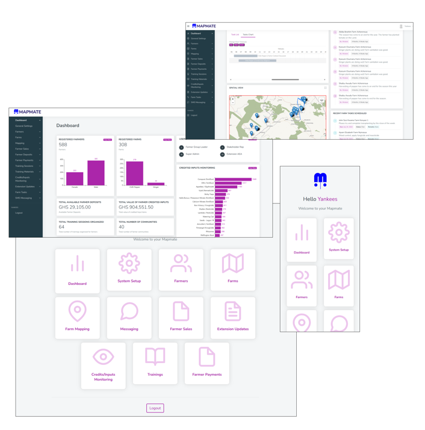

Listen
Understand how farmers and organizations currently collect information and make decisions.
Case study 03 / Digital systems
Farm information and communication tools designed around the people who use them.

The question
Farmers, cooperatives and buyers often work with fragmented information and unreliable connectivity. Useful agricultural software must address the record-keeping and communication needs of these different users in practical operating conditions.
My contribution
I co-founded Mapkot Technologies and lead product strategy, user research, geospatial analytics and partnerships. I help translate user needs into the development team’s priorities and connect spatial information with farm management and communication workflows.
The approach
Understand how farmers and organizations currently collect information and make decisions.
Translate those needs into farm profiling, mapping, records and communication workflows.
Work with the technology team to deliver and refine the platform.
Learn from pilots, user feedback and the practical constraints of adoption.
Outputs
The team’s agricultural data services support more than 3,500 farmer profiles and paid enterprise pilots. My role combines product and research leadership with geospatial contributions; platform engineering is a team effort.
For a discussion of methods, contributions or collaboration, get in touch.
Contact Kwaku Download portfolio ↓